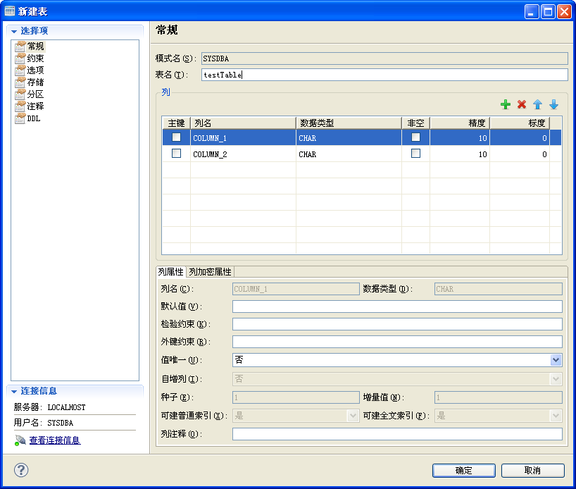
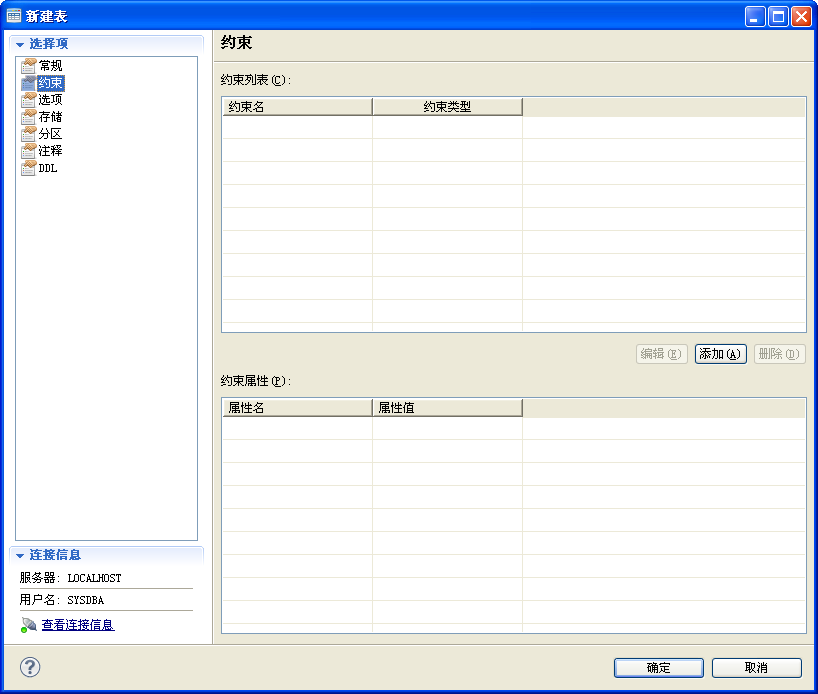
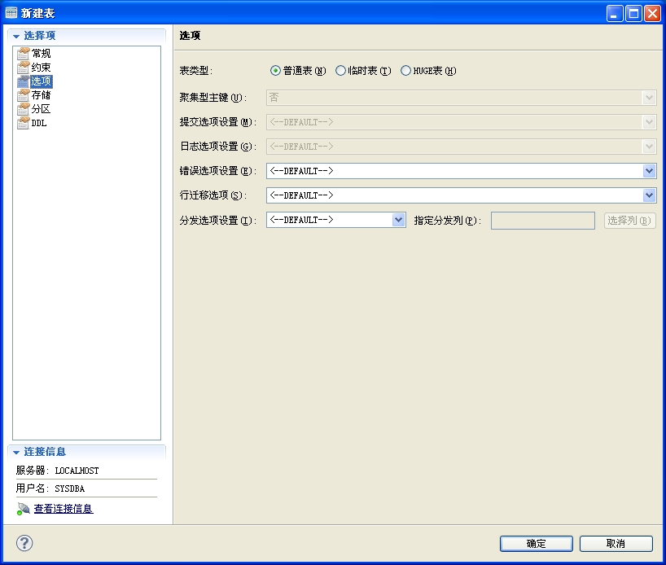

表对话框用于实现表的可视化创建及修改。
表相关的一些常规属性信息配置页面。

模式名
表对象所属的模式。
表名
表的标识名。
| 按钮 | 说明 |
|---|---|
| 添加新列 | |
| 删除选中列 | |
| 上移选中列 | |
| 下移选中列 |
| 字段 | 说明 |
|---|---|
| 列名 | 列标识名 |
| 数据类型 | 列存放数据的类型 |
| 默认值 | 列所设置的默认值,设定字符型默认值时需要加单引号 |
| 引用约束 | 列所设置的引用约束 |
| 自增列 | 列是否为自增列 |
| 种子 | 列为自增列时所设置的种子 |
| 增量值 | 列为自增列时所设置的增量值 |
| 可建立普通索引 | 标识列是否可以创建普通索引 |
| 可建立全文索引 | 标识列是否可以创建全文索引 |
| 列注释 | 列级注释 |
表的列约束配置页面。

| 按钮 | 说明 |
|---|---|
| 编辑 | 修改约束配置 |
| 添加 | 添加约束。打开约束对话框 |
| 删除 | 删除约束。 |
表相关的选项配置页面。

表类型
表的类型。
聚集型主键
是否为表创建聚集主键。
提交选项设置
表的提交选项设置。
普通表：表对象为啊普通表：表对象为常规表普通表：表对象为常规表普通表：表对象为常规表普通表：表对象为常规表默认：不设置，采用服务器默认操作保留行：提交操作后保留插入的行数据